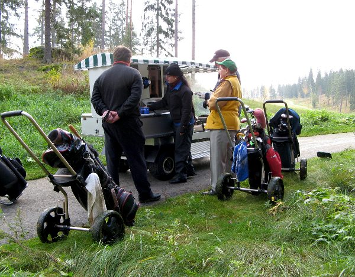
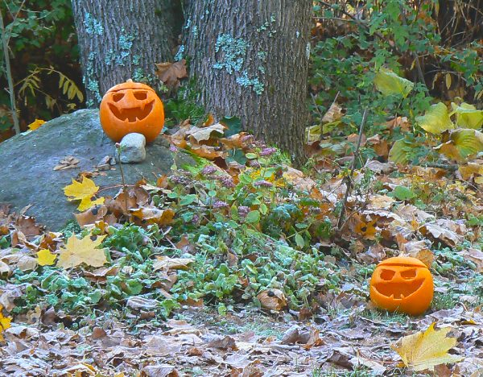
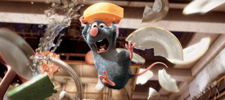

Golfia Kytäjällä
Karjalaisen Tapsa kutsui mummin ja vaarin Kytäjälle pelaamaan golfia. Minäkin pääsin siinä siivellä mukaan. Pelasimme uuden South-East kentän. Sää oli meille suosiollinen ja maisemat komeat. Lähtö vain oli kovin aikaisin aamutuimaan.
South-East kenttä sijaitsee varsin kumpuilevassa maastossa. Alkuosaltaan se onkin yhtä nousua ja sitten laskeudutaan alas järven rantaan. Kenttää on kehuttu ja se on monin tavoin palkittukin, mutta henkilökohtainen mielipiteeni on, että vanha North-West kenttä on paljon mukavampi. Golf-lehdessäkin kritisoitiin ylöspäin lähestyttäviä greenejä ja kentän raskautta.
Octoberfest
Vietimme kesän loppumista ja sadonkorjuun juhlaa Weckströmien kanssa. Käsillä oli myös "suuren kurpitsan" juhlan ajankohta. Niinpä sen kunniaksi nautimme kurpitsakeittoa. Kurpitsan kuorista teimme iloisesti irvistelevät naamat, jotka hauskasti loistivat kynttilälyhtyinä illan pimeydessä.
Rottatouille
Jos sismmässäsi tunnet paloa johonkin asiaan, niin ollaksesi onnellinen ja rehellinen itsellesi sinun pitää elää sen mukaisesti. Jos tunnet olevasi sielultasi suuri kokki ja rakastat ruokaa ja sen valmistamista,niin sitä kutsua sinun pitää seurata, vaikka sitten olisit - rotta. Näin rohkaisi edesmenneen suuren keittomestarin henki Remy-rottaa tekemään. Ja sehän teki.
Kävimme Samin kanssa katsomassa Remy-rotan edesottamuksia Tikkurilan elokuvateatterissa. Animaatiot olivat hienoja ja meno oli paikoitellen aika hurjaa milloin maaseudulla haulikkoammunnan kohteena, milloin taas Pariisin likaviemärien kohinassa tai ravintolan keittiössä. No yhtä kaikki, loppu oli kaikkien osapuolien kannalta kaikinpuolin onnellinen.
Katselin muita lapsia ja nuoria, jotka olivat tulleet katsomaan elokuvaa. Rekvisiittaan kuului käsittämättömän jättimäinen rasia voille ja rasvalle tuoksuvia popcorneja, ainakin puolen litran muki limua ja lisäksi karkkia. Taisimme olla Samin kanssa aika kokemattomia elokuvissa kävijöitä tai sitten leffan aihepiiri oli erityisesti inspiroinut yleisöä. Tosin Remy-kokki olisi nyrpistänyt kuononaan mokomalle roskaruoalle.
Kuukauden sää

Lokakuun sää oli normaalia syksyn säätä. Ajoittain oli pientä aamukuuraa, mutta mansikat ja vadelmatkin vielä yrittivät tehdä marjaa.
Kuukauden ajatus

Nainen. Se on vähän niin kuin eläin. Tai luonnonilmiö. Ei sille mitään voi.
Kotikadun Onni Partanen
Kuukauden kuva

Aamu valkenee Kytäjällä
Lokakuun kuvia